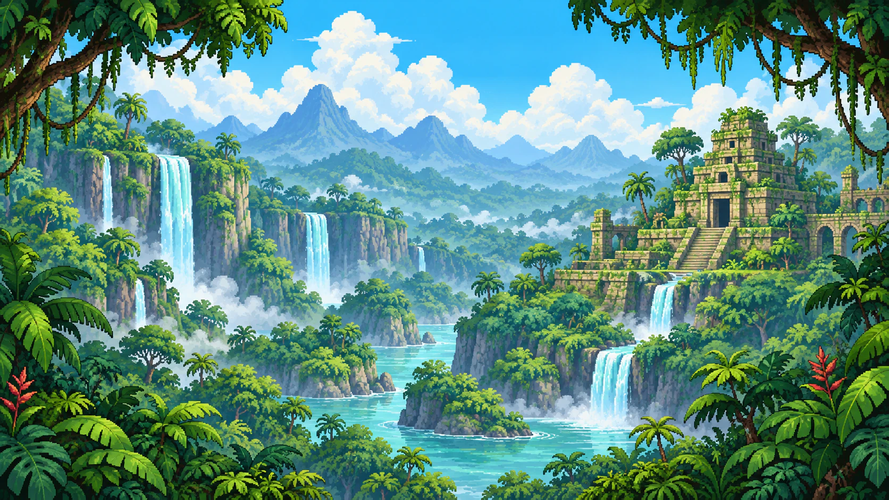
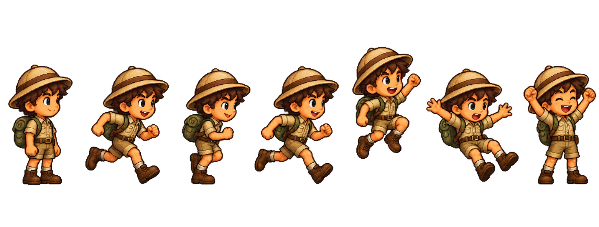
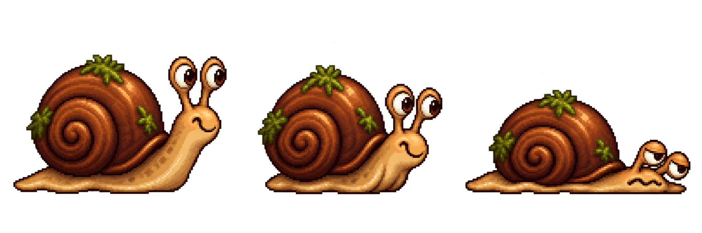
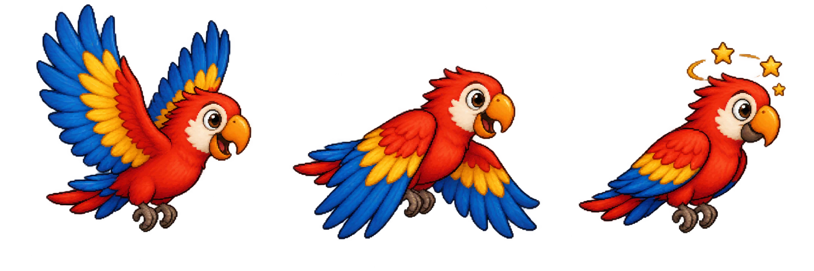
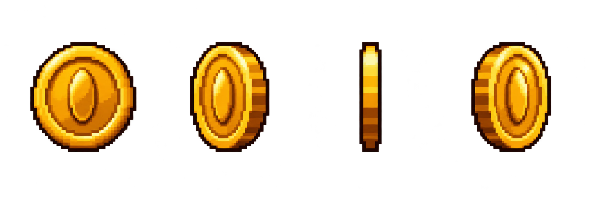
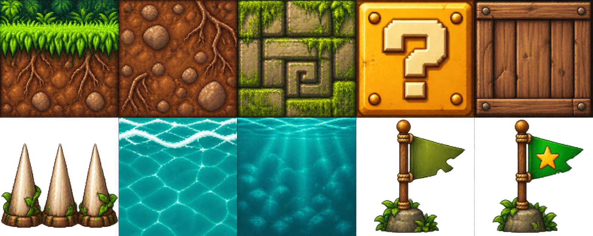
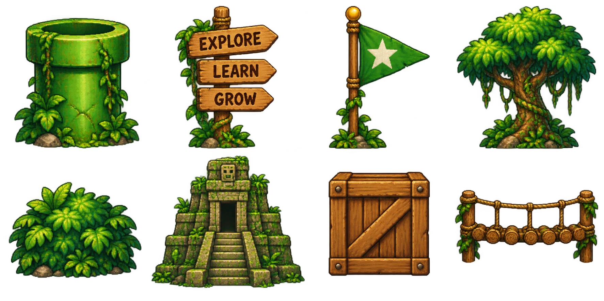
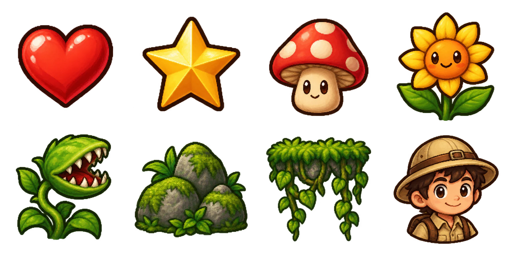

Jungle Run
Artwork review · Safari explorer, lush jungle ruins, warm gold treasure, and friendly forest creatures.
Waterfalls & ancient ruins

Active jungle backdrop. Foreground platforms and characters are drawn separately.Explorer · seven animation frames

Idle · Run A · Run B · Run C · Rise · Fall · VictorySnail · ground enemy

Two crawl poses and a harmless stunned pose.Macaw · flying enemy

Two flight poses and a stunned pose.Gold coins · four spin frames

Used for collectibles and the coin counter.Terrain · ten tiles

Terrain textures follow the level's existing collision shapes.Jungle props

Sign, goal, tree, bush, temple, and crate are in the level. Pipe and bridge art are ready for the next approved map layout.Items & details

Hearts, portrait, and vines are in use. The other items are available for future mechanics and scenery.